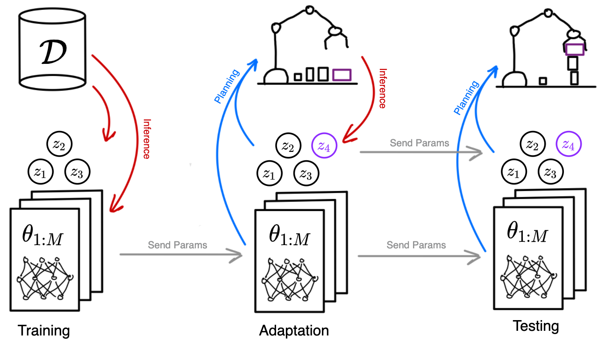
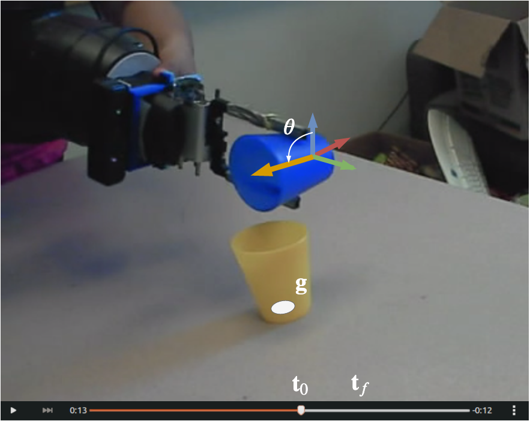
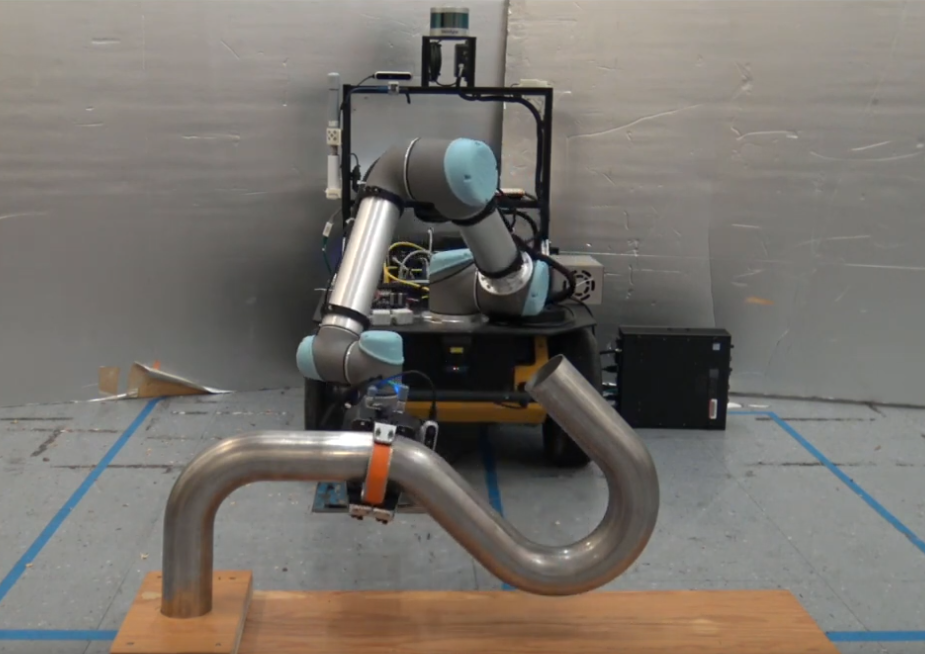
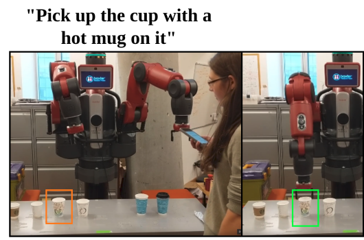
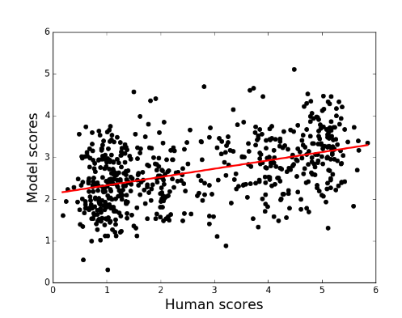
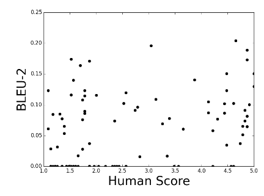

|
Michael Noseworthy I am a graduate student in the Robust Robotics Group at MIT. My research focuses on robust planning under uncertainty motivated by long-horizon manipulation tasks such as assembly or rearrangement. I am also a part-time intern at the NVIDIA Seattle Robotics Lab where I work on contact-rich manipulation. Before MIT, I studied dialogue systems at McGill University's Reasoning and Learning Lab. |
{kind=link}
Research |

|
Amortized Inference for Efficient Grasp Model Adaptation
Michael Noseworthy*, Seiji Shaw*, Chad Kessens, ICRA 2024 Adaptively grasping objects without unknown dynamics properties (e.g., mass distribution or frictional coefficients). Paper |
|
Insights towards Sim2Real Contact-Rich Manipulation
Michael Noseworthy, Iretiayo Akinola, Yashraj Narang, Fabio Ramos, Lucas Manuelli, Ankur Handa, Dieter Fox NeurIPS 2022: Robot Learning Workshop Training policies to solve contact-rich manipulation tasks with noisy pose estimates. Paper |
|
|  |
Object-Factored Models with Partially Observable State
Isaiah Brand*, Michael Noseworthy*, Sebastian Castro, NeurIPS 2021: Bayesian Deep Learning Workshop Efficient adaptation for manipulating objects with non-visual parameters. Paper |
|
Active Learning of Abstract Plan Feasibility
Michael Noseworthy*, Caris Moses*, Isaiah Brand*, Sebastian Castro, Leslie Kaelbling, Tomás Lozano-Pérez, Nicholas Roy RSS 2021 Efficient online learning of feasility models using ensembles of graph networks. Paper / Talk |
|
|
Visual Prediction of Priors for Articulated Object Interaction
Caris Moses*, Michael Noseworthy*, Leslie Kaelbling, Tomás Lozano-Pérez, Nicholas Roy ICRA 2020 Efficient manipulation of articulated objects using visual priors to infer kinematic parameters. Paper / Talk / Code / Website |
|
|  |
Task-Conditioned Variational Autoencoders for Learning Movement Primitives
Michael Noseworthy, Rohan Paul, Subhro Roy, Daehyung Park, CORL 2019 Learning interpretable movement primitives from demonstration. Paper |
|  |
Inferring Task Goals and Constraints using Bayesian Nonparametric Inverse Reinforcement Learning
Daehyung Park, Michael Noseworthy, Rohan Paul, Subhro Roy, CORL 2019 Learning from demonstration in the presence of complex constraints. Paper |
|  |
Leveraging Past References for Robust Language Grounding
Subhro Roy*, Michael Noseworthy*, Rohan Paul, Daehyung Park, CoNLL 2019 Natural language grounding in situated and temporally extended contexts. Paper |
|  |
Towards an Automatic Turing Test: Learning to Evaluate Dialogue Responses
Ryan Lowe*, Michael Noseworthy*, Iulian Vlad Serban, Nicolas Angelard-Gontier, ACL 2017 Automatic metric for dialogue model response evaluation. Paper / Code / Talk |

|
Predicting Success in Goal-Driven Human-Human Dialogues
Michael Noseworthy, SIGDIAL 2017 Automatic success prediction for task-driven dialogue systems. Paper |
|  |
How NOT To Evaluate Your Dialogue System: An Empirical Study of Unsupervised Evaluation Metrics for Dialogue Response Generation
Chia-Wei Liu*, Ryan Lowe*, Iulian Vlad Serban*, Michael Noseworthy*, EMNLP 2017 A study of how common automatic metrics for evaluating dialogue responses correlate with human judgement. Paper / Talk |
Miscellanea |
 |
Inclusion@CoRL Organizer, CoRL 2020
Queer in AI Organizer, RSS 2021 Queer in AI Organizer, CoRL 2021 |
|
Website template from Jon Barron. |